skymodelr generates physically‑plausible sky domes and night skies as high‑dynamic‑range EXR images/arrays directly from R. It provides the Hosek–Wilkie analytic sky model and (optionally) the 2021–22 Prague spectral sky model (below‑horizon sun, altitude, and wide‑spectrum support). It also includes options to add a physically-accurate moon that models phase correctly, adjusts orientation based on the viewers latitude and longitude, accounts for changes in brightness due to distance variation, opposition surge, and atmospheric attenuation. skymodelr also includes the option to add an accurate visible star field aligned to observer location/time. Outputs are lat‑long environment maps (2:1 equirectangular) that you can feed into renderers (such as rayrender).
generate_sky_latlong() composes a full sky environment using the functions generate_sky(), generate_moon_latlong(), and generate_stars() for a specific latitude, longitude, and time. By default generate_sky_latlong() only includes the sun’s contribution, but you can also include stars and the moon by setting moon = TRUE and stars = TRUE.
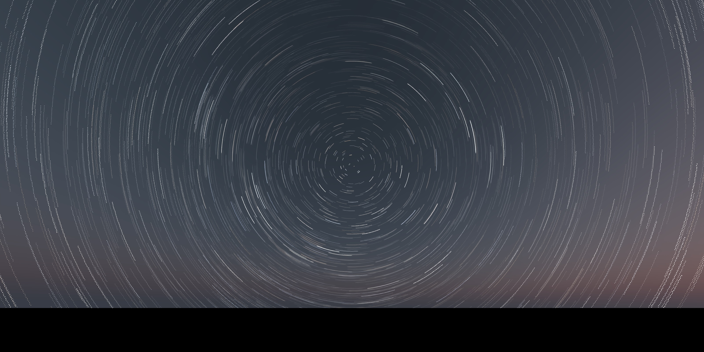
Installation
# Latest version from GitHub
remotes::install_github("tylermorganwall/skymodelr")If you plan to use the Prague spectral model, download its coefficient dataset(s) once (see download_sky_data() below).
Functions
-
generate_sky()— Write/return an EXR sky dome using either the Hosek–Wilkie (default) or Prague model.-
filename = NAto return the HDR array in‑memory (otherwise a.exris written). -
albedo = 0.1ground reflectance (0–1). -
turbidity = 3atmospheric turbidity (1.7–10; Hosek only). -
elevation = 10,azimuth = 90solar position (degrees). -
altitude = 0observer altitude in meters (Prague only). -
resolution = 2048image height (width is2 * resolution). -
number_cores = 1threads. -
hosek = TRUEsetFALSEto use the Prague model; Prague optionswide_spectrum,visibility. -
render_mode = "all"for atmosphere + solar disk; use"atmosphere"to omit the disk or"sun"for disk only.
-
-
generate_sky_latlong()— Produce a complete equirectangular sky array/EXR. Accepts date/time and observer location, and (optionally) adds stars and a moon‑lit atmosphere.- Core args:
filename = NA,datetime,lat,lon,albedo,turbidity,resolution,number_cores. - Model selection:
hosek = TRUE(Hosek–Wilkie) or sethosek = FALSEto use the Prague spectral model; Prague extras:wide_spectrum,visibility,altitude. - Composition:
stars = FALSE,star_width = 1,moon = FALSE.
- Core args:
generate_moon_latlong()— Produce a moon‑lit atmosphere by scaling a sky dome to the moon’s luminance (phase + opposition surge). Computes the moon’s position from time/location, and exposes moon-specific controls such asmoon_extinction_kV,earthshine_albedo, andsolar_irradiance_w_m2.-
generate_stars()— Generate a star‑field EXR aligned with the sky dome:-
filename = NA,resolution = 2048. -
lon,latobserver longitude/latitude (deg) anddatetime(used for local sidereal time). - Optional extinction/appearance controls:
turbidity,ozone_du,altitude,star_width,atmosphere_effects,upper_hemisphere_only,number_cores.
-
calculate_sky_values()— Sample radiance from the Prague model for given sky directions (phi,theta) and conditions (elevation,altitude,visibility,albedo,azimuth).-
download_sky_data(sea_level = TRUE, wide_spectrum = FALSE)— Download Prague model coefficient data:- Sea‑level, standard spectrum:
SkyModelDatasetGround.dat(~107 MB) - Sea‑level, wide spectrum:
PragueSkyModelDatasetGroundInfra.dat(~574 MB) - Full‑altitude dataset:
SkyModelDataset.dat(~2.4 GB)
- Sea‑level, standard spectrum:
Usage
We’ll generate the sun on the morning (right after sunrise) in Washington DC on March 21st. On this day the sun is rising directly east (90 degrees azimuth), which we can see as the sun appearing a quarter of the way from the left side of the image.
library(skymodelr)
library(rayimage)
env = generate_sky_latlong(
datetime = as.POSIXct("2025-03-21 06:15:00",tz="EST"),
lat = 38.9072,
lon = -77.0369,
resolution = 800,
hosek = FALSE,
verbose = TRUE
)
rayimage::render_exposure(env, exposure=-2) |>
rayimage::plot_image()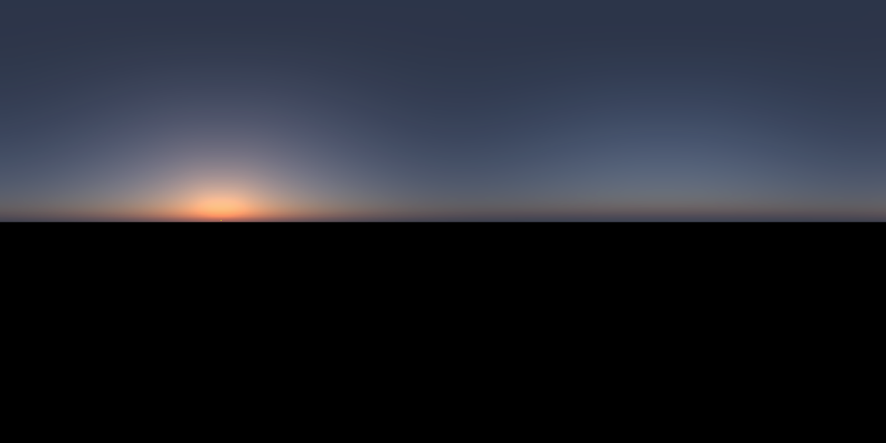
Afternoon in DC:
env = generate_sky_latlong(
datetime = as.POSIXct("2025-03-21 12:15:00",tz="EST"),
lat = 38.9072,
lon = -77.0369,
resolution = 800,
hosek = FALSE
)
rayimage::render_exposure(env, exposure=-5) |>
rayimage::plot_image()Evening in DC:
env = generate_sky_latlong(
datetime = as.POSIXct("2025-03-21 18:15:00",tz="EST"),
lat = 38.9072,
lon = -77.0369,
resolution = 800,
hosek = FALSE
)
rayimage::render_exposure(env, exposure=-2) |>
rayimage::plot_image()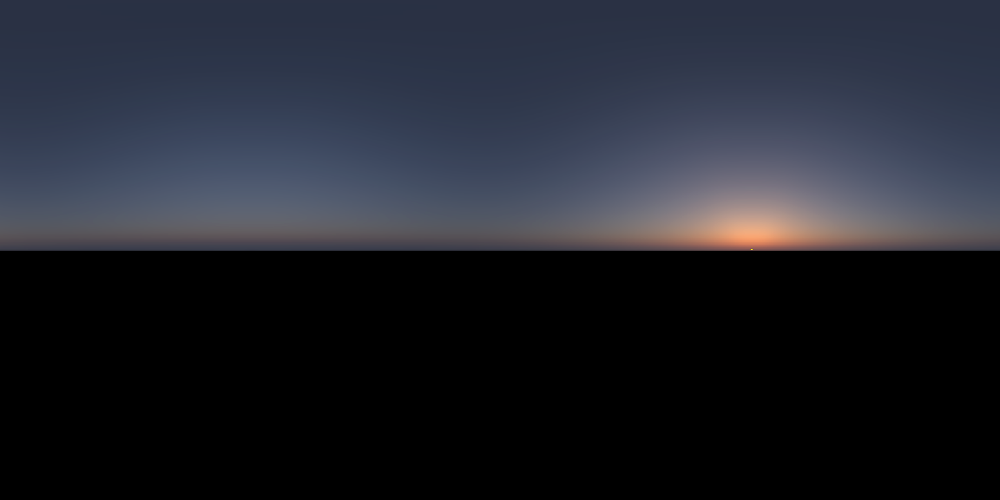
Evening in DC (Hosek model), note the unphysical yellowish tint:
env = generate_sky_latlong(
datetime = as.POSIXct("2025-03-21 18:15:00",tz="EST"),
lat = 38.9072,
lon = -77.0369,
resolution = 800,
hosek = TRUE
)
rayimage::render_exposure(env, exposure=-4) |>
rayimage::plot_image()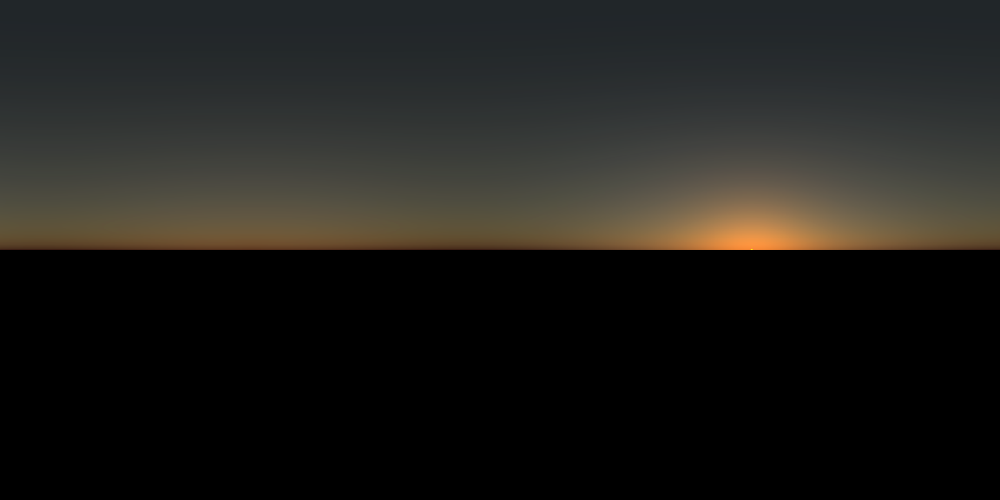
The Prague model supports solar elevations below the horizon:
env = generate_sky_latlong(
datetime = as.POSIXct("2025-03-21 18:37:00",tz="EST"),
lat = 38.9072,
lon = -77.0369,
verbose=TRUE,
resolution = 800,
hosek = FALSE
)
rayimage::render_exposure(env, exposure=3) |>
rayimage::plot_image()The Prague model also supports altitudes up to 15,000m.
2,000 meters
Note that now we’re above a good portion of the atmosphere, so we start seeing scattered light below us.
env = generate_sky_latlong(
datetime = as.POSIXct("2025-03-21 12:15:00",tz="EST"),
lat = 38.9072,
lon = -77.0369,
altitude = 2000,
resolution = 800,
hosek = FALSE
)
rayimage::render_exposure(env, exposure=-5) |>
rayimage::plot_image()7,500 meters
High enough altitudes have the majority of the scattered light coming from below the viewer.
env = generate_sky_latlong(
filename = NA,
datetime = as.POSIXct("2025-03-21 12:15:00",tz="EST"),
lat = 38.9072,
lon = -77.0369,
altitude = 7500,
resolution = 800,
hosek = FALSE
)
rayimage::render_exposure(env, exposure=-5) |>
rayimage::plot_image()15,000 meters
At high altitudes, the resulting render has almost all the scattered light coming from below, resulting in a space-like appearance.
env = generate_sky_latlong(
filename = NA,
datetime = as.POSIXct("2025-03-21 12:15:00",tz="EST"),
lat = 38.9072,
lon = -77.0369,
altitude = 15000,
resolution = 800,
hosek = FALSE
)
rayimage::render_exposure(env, exposure=-5) |>
rayimage::plot_image()15,000 meters, sunset
Note the shadow of the Earth in the atmosphere opposite the sun when the sun is below the horizon.
env = generate_sky_latlong(
filename = NA,
datetime = as.POSIXct("2025-03-21 18:30:00",tz="EST"),
lat = 38.9072,
lon = -77.0369,
altitude = 15000,
resolution = 800,
hosek = FALSE
)
rayimage::plot_image(env)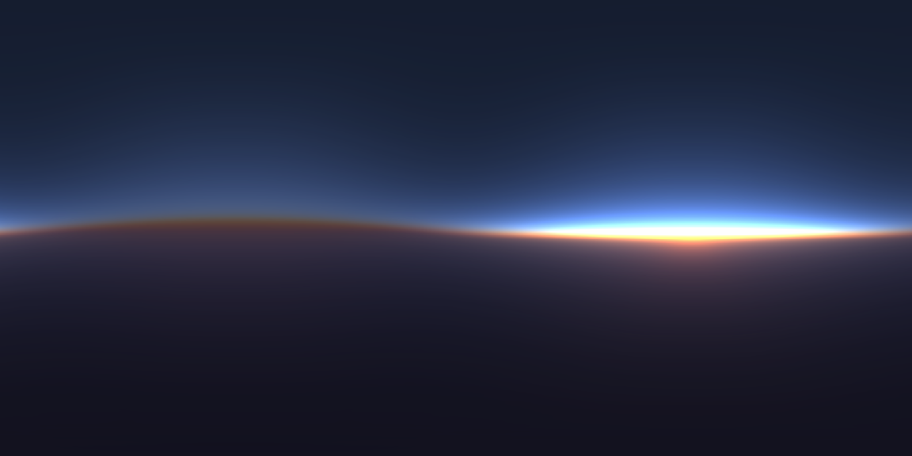
Full sun + moon + stars (with increased exposure for artistic effect):
env = generate_sky_latlong(
filename = NA,
datetime = as.POSIXct("2025-03-21 18:37:00",tz="EST"),
lat = 38.9072,
lon = -77.0369,
resolution = 800,
hosek = FALSE,
stars = TRUE,
moon = TRUE,
stars_exposure = 12
)
rayimage::render_exposure(env, exposure = 2) |>
rayimage::plot_image()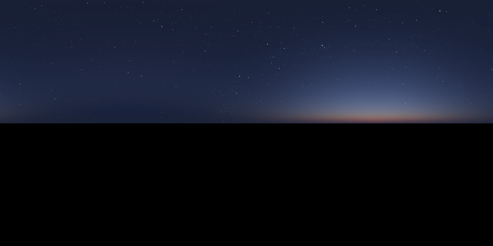
Custom sun position, multicore, atmosphere only
skymodelr allows you to turn off the direct sun contribution to only included scattered light.
sky = generate_sky(
albedo = 0,
elevation = 25,
azimuth = 135,
resolution = 800,
number_cores = 2,
hosek = FALSE,
render_mode = "atmosphere"
)
rayimage::render_exposure(sky, exposure=-6) |>
rayimage::plot_image()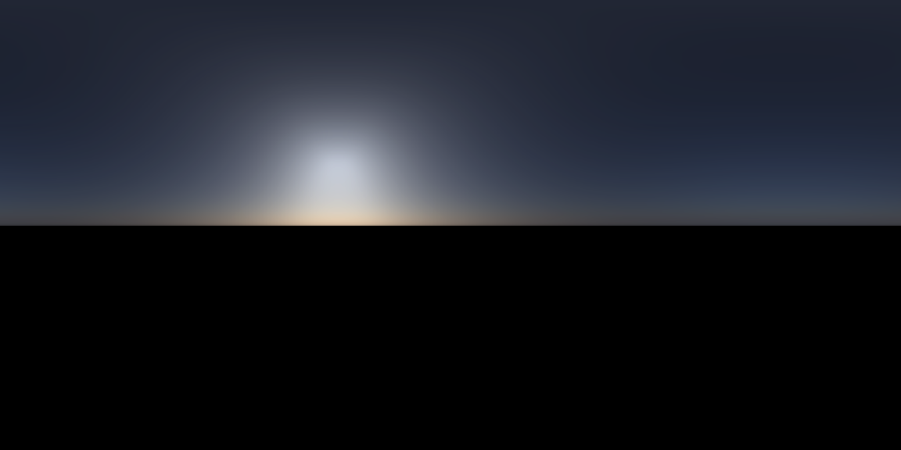
Moon‑lit atmosphere
moon_sky = generate_moon_latlong(
filename = NA,
datetime = as.POSIXct("2025-03-21 02:15:00",tz="EST"),
lat = 38.9072,
lon = -77.0369,
albedo = 0.2,
turbidity = 3,
resolution = 6000,
number_cores = 8,
moon_atmosphere = TRUE,
verbose = TRUE
)
#Increase exposure
moon_sky |>
rayimage::render_exposure(10) |>
rayimage::plot_image()This generates and places a radiance-accurate moon into the scene, taking into account the moon’s phase, orientation with respect to the viewer’s latitude and longitude, surface albedo, non-lambertian reflectivity, distance to earth, earthshine, the “opposition surge” effect, and attenuation due to the atmosphere at varying lunar elevations. The moon is rendered in rayvertex and resampled so it is the correct size on the environment map. Here are some of the pre-scaled renders.
moon_image1 = skymodelr:::generate_moon_image_latlong(datetime = as.POSIXct("2025-03-21 02:15:00",tz="EST"),
lat = 38.9072,
lon = -77.0369)
rayimage::render_exposure(moon_image1$moon_luminance_array, 2, preview = TRUE)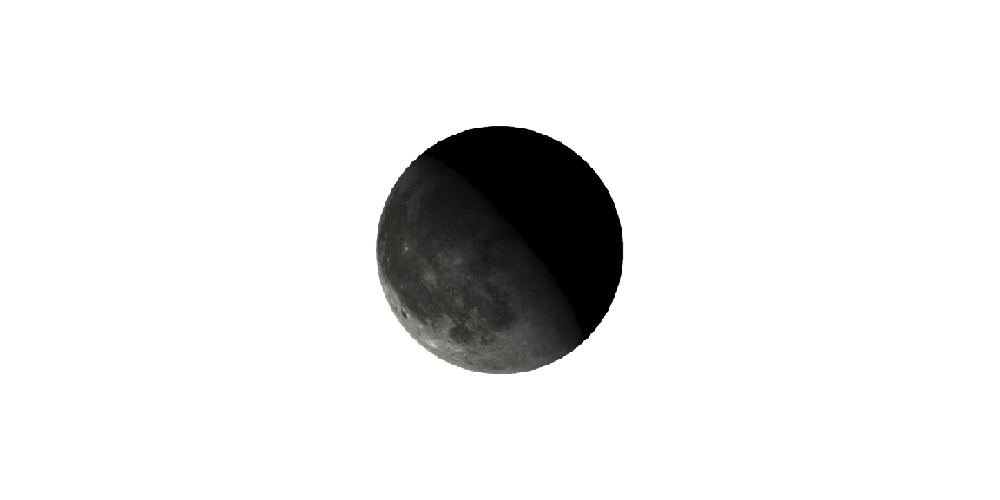
#Change latitude and our orientation changes
moon_image2 = skymodelr:::generate_moon_image_latlong(datetime = as.POSIXct("2025-03-10 02:15:00",tz="EST"),
lat = 38.9072,
lon = -77.0369)
rayimage::render_exposure(moon_image2$moon_luminance_array, 2, preview = TRUE)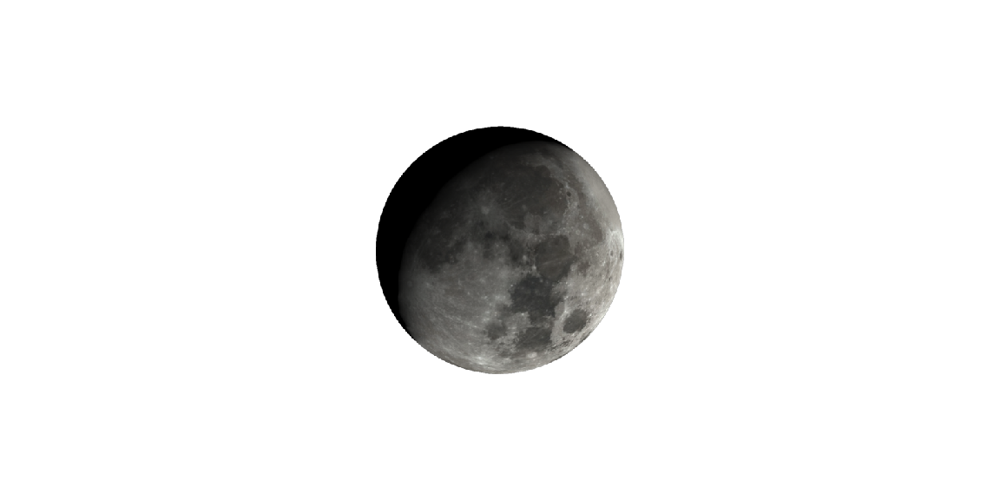
moon_image3 = skymodelr:::generate_moon_image_latlong(datetime = as.POSIXct("2025-03-10 02:15:00",tz="EST"),
lat = 0,
lon = -77.0369)
rayimage::render_exposure(moon_image3$moon_luminance_array, 2, preview = TRUE)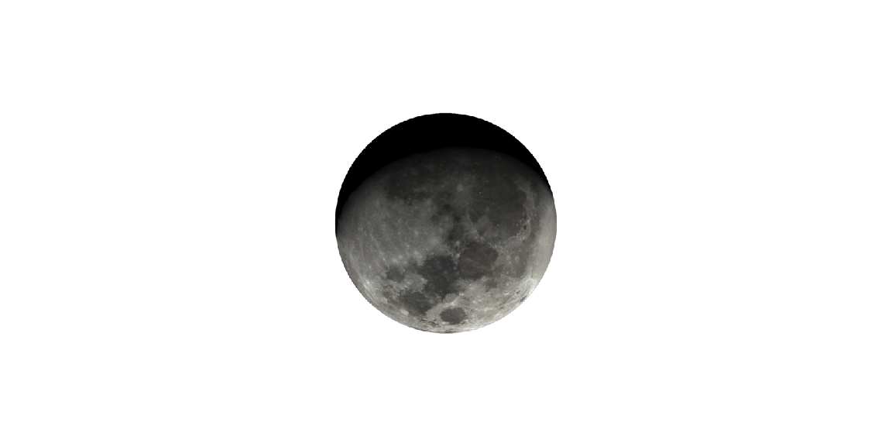
moon_image4 = skymodelr:::generate_moon_image_latlong(datetime = as.POSIXct("2025-03-10 02:15:00",tz="EST"),
lat = -38.9072,
lon = -77.0369)
rayimage::render_exposure(moon_image4$moon_luminance_array, 2, preview = TRUE)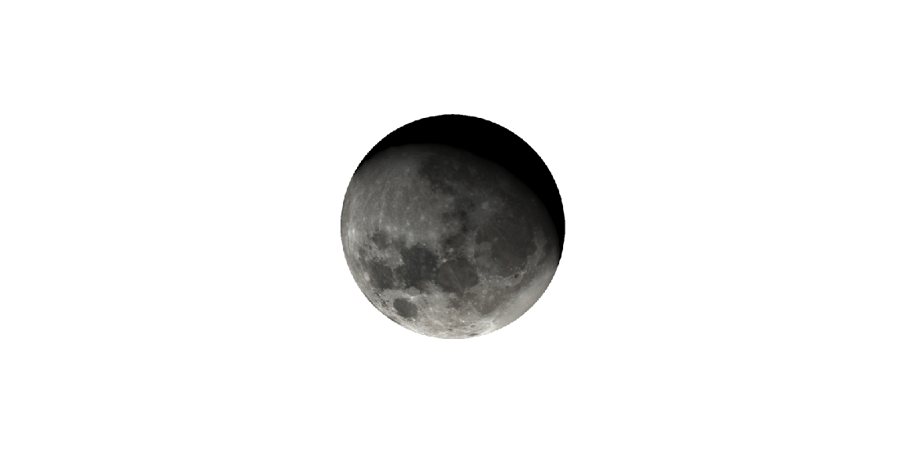
Star field aligned to time and place
Stars are rendered using color values derived from the star’s temperature.
stars = generate_stars(
datetime = as.POSIXct("2025-03-21 02:15:00",tz="EST"),
lat = 38.9072,
lon = -77.0369,
resolution = 800,
atmosphere_effects = TRUE,
upper_hemisphere_only = TRUE
)
stars |>
rayimage::render_exposure(16) |>
rayimage::plot_image()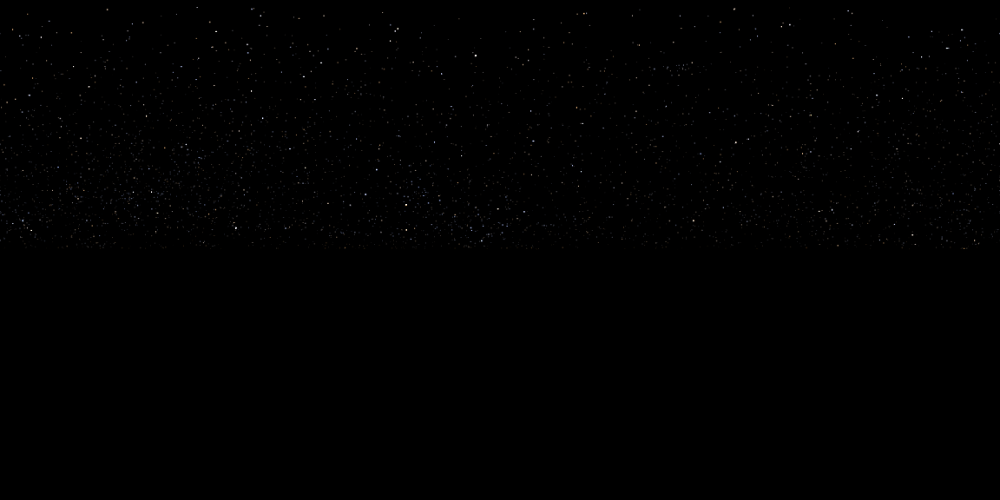
Now render the entire sphere:
stars_full = generate_stars(
datetime = as.POSIXct("2025-03-21 02:15:00",tz="EST"),
lat = 38.9072,
lon = -77.0369,
resolution = 800,
atmosphere_effects = FALSE,
upper_hemisphere_only = FALSE
)
stars_full |>
rayimage::render_exposure(16) |>
rayimage::plot_image()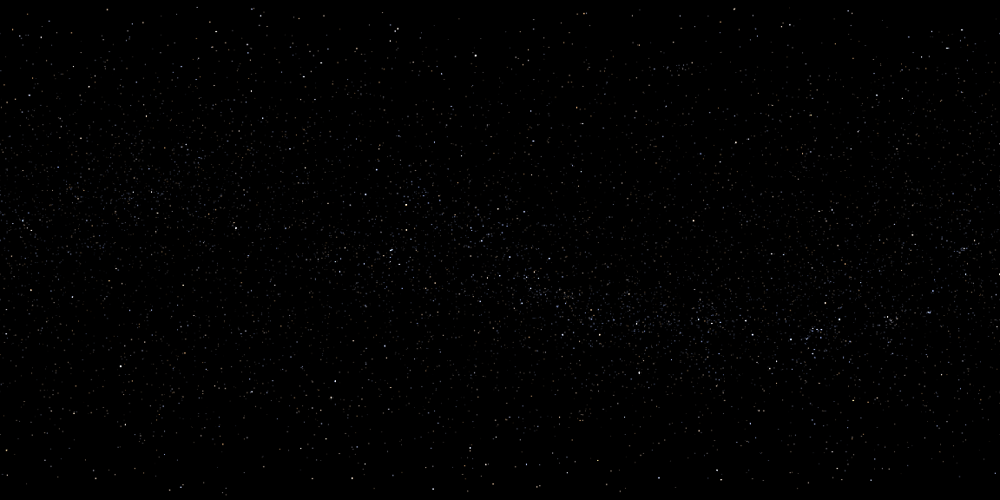
Use the Prague spectral model
# Download once (choose variant via args):
coef_path = download_sky_data(sea_level = TRUE, wide_spectrum = FALSE)
# Render with the Prague model:
sky_prague = generate_sky(
albedo = 0.3,
elevation = 10,
azimuth = 90,
altitude = 0,
hosek = FALSE,
wide_spectrum = FALSE,
visibility = 50,
resolution = 2048,
number_cores = 4
)
plot_image(sky_prague)Use in other packages
You can pass these EXR images to rayrender. Here’s a daytime sky:
library(rayrender)
day_exr = tempfile(fileext=".exr")
generate_sky(
filename=day_exr,
elevation = 20,
azimuth = 135,
resolution = 1000,
hosek = FALSE
)
generate_ground(depth = -0.5, material=diffuse(color="grey20", checkercolor = "grey50"),spheresize = 10000) |>
add_object(obj_model(r_obj())) |>
render_scene(environment_light = day_exr, iso=10,
clamp_value = 1000, fov = 80, lookfrom = c(0,0,-1), aperture = 0.05)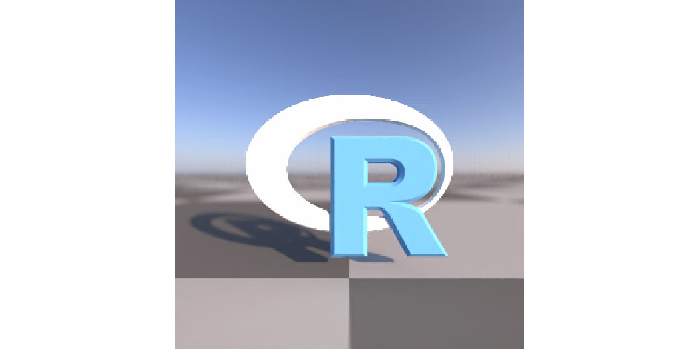
And a sunset sky, with the sun coming from due North, which is +Z in rayrender. If you are not trying to match a real place, you make adjustments to an existing environment map’s orientation using the rotate_env argument in rayrender.
sunset_exr = tempfile(fileext=".exr")
generate_sky(
filename=sunset_exr,
elevation = 4,
azimuth = 0,
resolution = 2000,
hosek = FALSE
)
#This has the light coming from north
generate_ground(depth = -0.4, material=diffuse(color="grey20", checkercolor = "grey50"),spheresize = 10000) |>
add_object(obj_model(r_obj())) |>
render_scene(environment_light = sunset_exr, iso=10,
clamp_value = 1000, fov = 80, lookfrom = c(0,0,-1), aperture = 0.05)
#Rotate the existing env 225 degrees to come from the southwest.
generate_ground(depth = -0.4, material=diffuse(color="grey20", checkercolor = "grey50"),spheresize = 10000) |>
add_object(obj_model(r_obj())) |>
render_scene(environment_light = sunset_exr, iso=20,
clamp_value = 10000, fov = 40, lookfrom = c(0,1,-4), aperture = 0.05,
rotate_env = 225)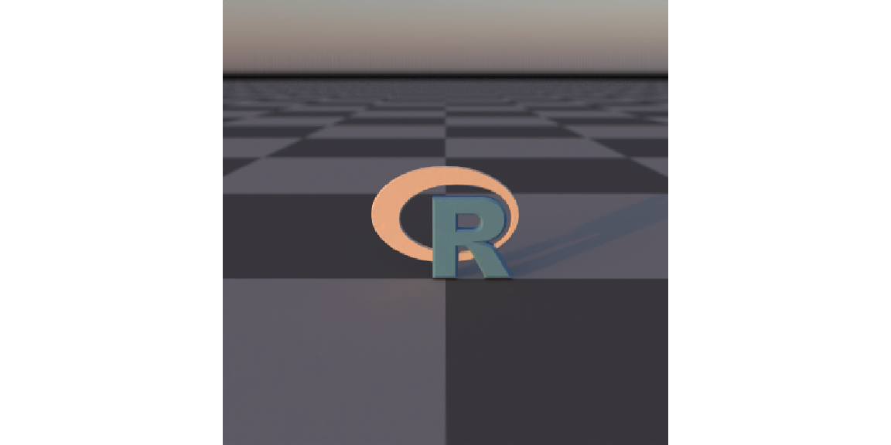